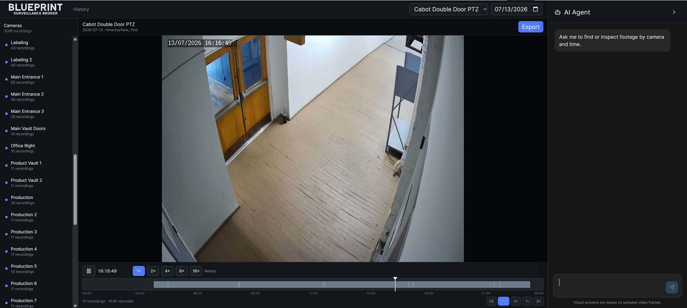
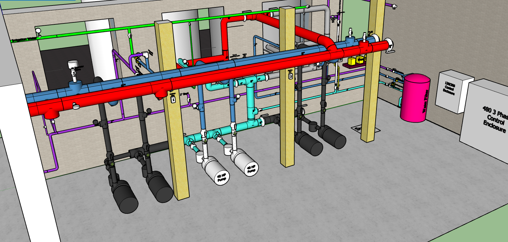

AI-led organizational transformation, technology strategy, and end-to-end technology engineering services for startups as well as small and medium businesses.
Board-facing technology leadership when you need it. Areas include strategy, planning, technology and vendor selection, organizational design, budgets, program and product management, revenue expansion, compliance, fundraising, and acquisition transition.
Embedded AI like Microsoft Copilot is no longer enough. The new baseline is cross platform agentic tools. In order for a company to stay competitive, every business user needs tools like Claude Desktop, ChatGPT Desktop, Velum, n8n, OpenClaw or Blueprint Workbench inside their daily workflow. Tool selection, rollout, training, skills, agents and the workflow redesign that makes adoption stick across the organization.
This includes multi-agent systems, generative AI integrations, and the infrastructure that runs them. Custom-built where it makes sense, off-the-shelf where it doesn’t.
When the strategy calls for new technology, we build it. Application, data, and infrastructure engineering. Networks, servers, and building systems.
We easily cross engineering disciplines — electrical, mechanical, software — to apply AI where it earns its place, as the agentic HVAC system at Riverside Mill demonstrates. And we cross technology layers: from core IT infrastructure to building systems like cameras and access control to business systems like inventory and regulatory audits.
The practice builds custom agentic software where the off-the-shelf options don’t fit the work. Two examples:

A workbench for teams of AI agents working together the way human teams do. Multiple Claude, Gemini, and Codex agents running together — coordinating, communicating, dividing work, collaboratively resolving blockers, guided by standards, process and guidelines.
Read more →
A camera archive you can talk to. Built for the Riverside Mill camera system and productized — browse hundreds of cameras on a wall-clock timeline, search by what actually happened in the footage, and ask an agent to open the exact camera and time. Privacy-first and video-only, with a local vision pipeline and hybrid cloud search.
Read more →Network, security, power, building systems, business systems — all of it, with agents woven through. An example:
Riverside Mill Complex is a 240,000 square foot brick former papermill built in the 1890s. It was converted to a multi-tenant commercial and light manufacturing facility. We service the building as a whole and five co-located businesses. We delivered the entire technology stack.
Infrastructure. Building-wide network and WiFi with tenant segmentation. Managed switching, servers, routers, firewalls. Full IP camera system. Access control for every tenant profile. UPS infrastructure and a generator capable of carrying the full building through extended outages.
End User AI. Implementation and enablement of end-user tools including Claude Code, ChatGPT Desktop, Microsoft Copilot, and Gemini within Google Workspace. Use cases include camera system management and clip retrieval, access control management with multi-system synchronization, inventory management, data collection and report production for regulatory compliance, regulatory audits, market and regulatory research, customer service automation, email monitoring and routing, and manufacturing production management and forecasting.
Custom Solution. Agentic industrial HVAC system with full heat recovery. We designed the mechanical and electrical, specified the control hardware, wired the sensor network, and wrote the agentic control software that runs it. The software was designed and built with Blueprint Workbench. Production, 24/7. Node-RED, Modbus, Python, Raspberry Pi, Ollama, Qwen, PostgreSQL. Temperature, pressure, humidity, TDS, and flow sensors. Industrial VFDs, boilers, filtration, peristaltic anti-corrosion dosing, evaporative cooling towers, water-source heat pumps.
Read more →
A small, senior team — people who have led and shipped technology at scale, and still build with their own hands.

Thirty years leading and transforming technology organizations, with CIO, CTO, and board-level roles at companies large and small, across mergers and acquisitions, startups, rescues, and turnarounds. Most recently Global Head of Service Delivery and Customer Success at Marsh McLennan (2,000+ applications, 150,000 users) and Senior Director of Technical Operations at Oliver Wyman; founder who raised $9.4M to build Mill Town Agriculture from concept to revenue.
Master’s degrees in Business Administration and IT Engineering, MIT-certified in AI Engineering, with sixteen provisional patents in autonomous AI systems. He operates at the level of strategy, organization, and business outcomes — and builds the teams and systems that deliver them.
LinkedIn →A hands-on architect and engineering leader with 20+ years building enterprise platforms — Chief Technology Officer at Cantor Gaming (a $1B+ wagering platform, among the first legal U.S. mobile sportsbooks) and Chief Architect across gaming, healthcare, and insurance. MIT graduate in EECS, Google Cloud Certified Architect, Johns Hopkins–certified in Applied Agentic AI, named inventor on four U.S. patents, and author of widely used open source (jest-fetch-mock, 1.5M weekly downloads).
Founder and CEO of TimelessSpaces.AI, where he built a full-stack, AI-orchestrated commerce platform end to end — and runs it as an operating business.
LinkedIn →The best way in is a short email telling us what you're trying to build — or what's gone sideways. We typically respond within one business day.